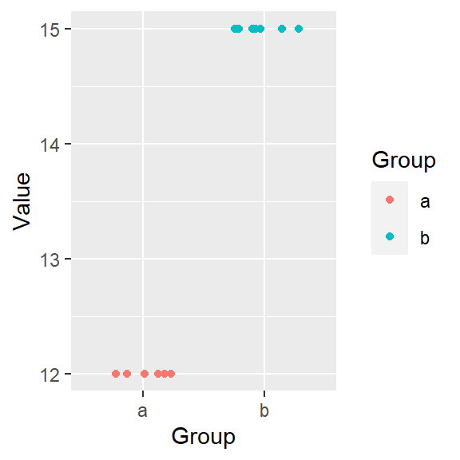
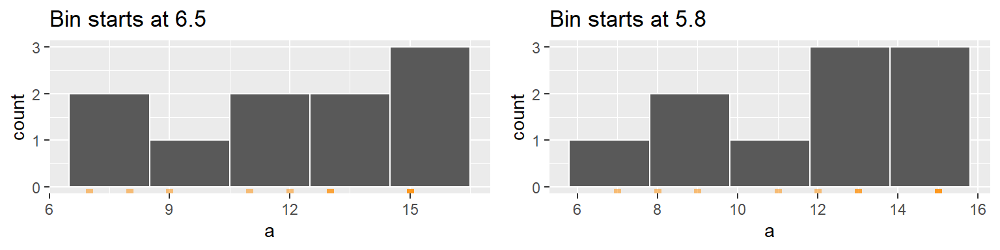
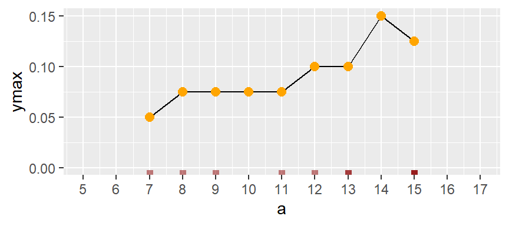

| dplyr | ggplot2 | tidyr |
|---|---|---|
| 1.1.4 | 3.4.4 | 1.3.1 |
16 Visualizing univariate distributions
16.1 Introduction
Univariate data consist of a single measurement type that is often broken up into categories.
Let’s take two batches of values that measure a same variable. We’ll label these batches a and b.
How do the two batches differ?
If the difference wasn’t obvious from the table view we can create a jittered point plot from the data. (The jitter plot spreads the values randomly about their group label to prevent the points from overlapping.)

It’s clear that both batches differ by their uniform values: batch a is made up of identical values, 12, and batch b is made up of a different set of identical values, 15.
Now let’s compare a heterogeneous batch of values.

Comparing the values using a jitter plot gives us:
So how do these batches differ? This time, the difference is not so obvious. However, they seem to differ by their central value. For example, each batch’s mean is:
# A tibble: 2 × 2
Group mean
<chr> <dbl>
1 a 10
2 b 17The center value (aka location), is one summary statistic we can use to compare batches. Another property of a batch that we might also want to compare is its distribution (aka spread). For example, does the spread between the two batches differ as well? It’s difficult to tell from the above plot given that the batches are offset, so we’ll level the batches by subtracting the means from their respective batches.
Removing the location (or mean in our example) from each value facilitates our comparison of both spreads. From our working example we can, at best, say that the batches differ in range (i.e. their minimum and maximum values). However, a spread can be characterized in many more ways than by its range. Next, we’ll focus on four exploratory tools that will help us explore and quantify a dataset’s spread. These are the histogram, the boxplot, the density plot and the quantile plot.
16.2 Histograms
A histogram bins the values (usually in equal sized bins) and plots the frequency in which each bin is filled. For example, to create a histogram of batch b where each bin size covers one unit, we type:
# Generate some random numbers
set.seed(23)
a <- round(runif(60, 5, 15))
b <- round(runif(100, 10, 20))
df <- data.frame(Value = c(a,b), Group = c(rep("a",6), rep("b",10))) # Long form
# Generate the histogram for batch a
library(ggplot2)
ggplot(as.data.frame(b), aes(x = b)) + geom_histogram(breaks = seq(9.5,20.5, by = 1), color = "white")(Note that because ggplot requires a dataframe as input, we have to create a dataframe from vector b.)
Here, we are explicitly defining the bin width as 1 unit, and the range as 6.5 to 16.5 via the parameter breaks = seq(6.5,16.5,by=1). The color parameter specifies the outline color. To change the fill color use the fill parameter instead. In our example, we have one value that falls in the first bin (bin ranging from 6.5 to 7.5), another value that falls in the second bin (bin value ranging from 7.5 to 8.5) and so on up to the second to last bin which has 3 values falling in it (bin covering the range 14.5 to 15.5). No values fall in the 15.5 to 16.5 bin range.
We can modify the width of each bin. For example, to have each bin cover two units instead of one, type:
ggplot(as.data.frame(b), aes(x = b)) + geom_histogram(breaks = seq(9.5,20.5,by = 2),
colour = "white") You’ll note that changing bin widths can alter the look of the histogram, this is particularly true when plotting large batches of values.
You can also opt to have the function determine the bin width by simply specifying the number of bins using the bins = parameter:
ggplot(as.data.frame(b), aes(x = b)) + geom_histogram(bins = 12, colour = "white")
You’ll note that the function will map the total number of observations falling in each bin to the y-axis. This may be easy to interpret, but it may make it difficult to compare batches of values having different number of observations. To demonstrate this, let’s plot both batches side-by-side.
ggplot(df, aes(x = Value)) + geom_histogram(bins = 10) + facet_wrap(~ Group)The differences in batch sizes results in differing bar heights. To resolve this issue, we can convert counts to density whereby the areas covered by each bin sum to 1. Each bin’s density value is computed from:
\[
density = \frac{count}{bin\ width * total\ observations}
\] To see an example of this, let’s revert back to the earlier dataset to facilitate a manual calculation of the density values. Here, we’ll map the after_stat(density) aesthetic to the y-axis to have ggplot compute density values.
ggplot(df, aes(x = Value, y=after_stat(density))) + geom_histogram(bins = 10) +
facet_wrap(~ Group)This makes for a more appropriate comparison.
16.3 Density plots
The histogram is not only sensitive to bin sizes, but it also suffers from discontinuities in its bins. Let’s revert back to the orignal set of values for a.
set.seed(23)
a <- round(runif(10, 5, 15))
df <- data.frame(a)In the following example, two histograms are generated using the same bin sizes and counts but with different starting x values. The orange marks along the x-axis show the location of the a values. The second histogram suggests a slightly bimodal (two peak) distribution while the one on the left suggests a unimodal distribution.

One workaround to the histogram’s limitations is to compute density values on overlapping bins. For example, let’s take the first bin and have it count the number of values between 5 and 9 (exclusive), then divide that number by the total number of values times the bin width–this gives us two observations falling in the bin thus a density value of 2 / (10 * 4) = 0.05. The following plot shows the bin. An orange dot is also added to represent the bin’s midpoint.
Next, we shift the bin over by one unit, then we calculate the density of observations in the same way it was computed for the first bin. The density value is plotted as an orange dot. Note how the bin overlaps partially with the first bin.
The same process is repeated for the third bin.
The process is repeated for each bin until the last bin is reached. (Note that some of the a values are duplicates such as 13 and 15–hence the high density values for the upper range).
If we remove the bins and connect the dots, we end up with a density trace.

A property associated with the density trace is that the area under the curve sums to one since each density value represents the local density at x.
So far, when we computed the density values, we assigned an equal weight to each point within their assigned bin–regardless how far the values were to the bin’s midpoint. This resulted in some raggedness to the plot. To smooth out the plot, we can apply different weights to each point such that points closest to the bin’s midpoint are assigned greater weight than the ones furthest from the midpoint. A Gaussian function can be used to generate the weights. The following figure depicts the difference in weights assigned to any point falling within the first bin whose range covers the interval 4 to 8 centered on 6.
With the rectangular weight, all points within a bin width are assigned equal weight. With the Gaussian weight, points closest to the bin center are assigned greater weight than those furthest from the center. ggplot’s density function defaults to the Gaussian weighting strategy. The weight type is referred to as a kernel.
You can generate a density plot of the data using the geom_density function.
ggplot(df, aes(x = a)) + geom_density(fill = "grey60")This plot appears much smoother than the one created in the above demonstration. This is because the density function generates 512 points for its density trace as opposed to the seven points used in the above demonstration.
The function adopts the gaussian weight function and will automatically define the bandwidth (analogous in concept to the bin width).
To adopt a rectangular weight, set the kernel parameter to "rectangular".
ggplot(df, aes(x = a)) + geom_density(fill = "grey60", kernel = "rectangular")Note the raggedness in the plot.
You can modify the smoothness of the density plot by adjusting its bandwidth argument bw. Here, the bandwidth defines the standard deviation of the Gaussian function.
ggplot(df, aes(x = a)) + geom_density(fill = "grey60", bw = 1)16.4 Boxplots
A boxplot is another popular plot used to explore distributions. In ggplot2 we use the geom_boxplot() function as in,
ggplot(df, aes(x = a)) + geom_boxplot() +
xlab(NULL) + theme(axis.text.y = element_blank(),
axis.ticks.y = element_blank()) The geom_boxplot function can map the values to the x-axis or to the y-axis. Traditionally, it’s mapped to the y-axis. Here, we choose to map it to the x-axis. You’ll note the extra functions xlab(NULL) + theme(axis.text.y=element_blank(), ... ); these are added to suppress labels and values/tics along the y-axis given that their default values do not serve a purpose here.
The following figure describes the anatomy of a boxplot.

The boxplot provides us with many meaningful pieces of information. For example, it gives us a center value: the median. It also tells us where the middle 50% of the values lie (in our example, approximately 50% of the values lie between 9.5 and 14.5). This range is referred to as the interquartile range (or IQR for short). Note that this is only an approximation given that some datasets may not lend themselves well to defining exactly 50% of their central values. For example, our batch only has four data points falling within the interquartile range (instead of five) because of tied values in the upper end of the distribution.
The long narrow lines extending beyond the interquartile range are referred to as the adjacent values–you might also see them referred to as whiskers. They represent either 1.5 times the width between the median and the nearest interquartile value or the most extreme value, whichever is closest to the batch center.
Sometimes, you will encounter values that fall outside of the lower and/or upper adjacent values; such values are often referred to as outliers.
16.4.1 Not all boxplots are created equal!
Not all boxplots are created equal. There are many different ways in which quantiles can be defined. For example, some will compute a quantile as \(( i - 0.5) / n\) where \(i\) is the nth element of the batch of data and \(n\) is the total number of elements in that batch. This is the method implemented by Bill Cleveland and we will refer to this method as Cleveland’s quantile method. This also happens to be the method implemented by the base’s boxplot function; this explains its different boxplot output compared to geom_boxplot in our working example:
boxplot(a, horizontal = TRUE)The upper and lower quartiles differ from those of ggplot since the three upper values values, 15, end up falling inside the interquartile range following the aforementioned quantile definition. This eliminates any upper whiskers. In most cases, however, the difference will not matter as long as you adopt the same boxplot procedure when comparing batches. Also, the difference between the plots become insignificant with larger batch size.
16.4.2 Implementing different quantile types in geom_boxplot
If you wish to implement different quantile methods in ggplot, you will need to create a custom function. For example, if you wish to adopt Cleveland’s quantile method (type = 5 in the quantile function) type the following:
# Function to extract quantiles given an f-value type (type = 5 in this example)
qtl.bxp <- function(x, type = 5) {
qtl <- quantile(x, type = type)
df <- data.frame(ymin = qtl[1], ymax = qtl[5],
upper = qtl[4], lower = qtl[2], middle = qtl[3])
}
# Plot the boxplot
ggplot(df, aes(x = "", y = a)) +
stat_summary(fun.data = qtl.bxp, fun.args = list(type = 5),
geom = 'boxplot') +
xlab(NULL) + theme(axis.text.y = element_blank()) +
coord_flip()Note the use of stat_summary instead of geom_boxplot.
16.5 Quantile plots
A quantile plot generates a point plot that joins the quantile to each value in a batch. The boxplot covered in the last section is a special case of the \(f\)-quantile function in that it only returns the 1st, 2nd (median) and 3rd quartiles. The \(f\)-quantile returns the full range of quantile values. The quantile is directly related to the concept of a percentile: it identifies the fraction of the batch of numbers that is less than a value of interest. The following figure describes the anatomy of a quantile plot.

The x-axis shows the \(f\)-values: the full range of probability fractions (note that in practice, you may see this fraction symbolized as \(p\)). The y-axis is the \(f\)-quantile, \(q(f)\), which gives us the value that is equal to or less than the associated \(f\)-value fraction. For example, the \(f\)-value of 0.25 (~the 25th percentile) is associated with the \(q(f)\) value of 9 meaning that 25% of the values in the dataset have values of 9 or less. Likewise, the \(f\)-value of 0.5 (the median) is associated with a \(q(f)\) value of 12.5 implying that half of the dataset’s values are 12.5 or less. The boxplot is shown alongside the quantile plot to highlight the analogy.
16.5.1 Computing the \(f\)-quantile
Computing \(f\) requires that the batch of numbers be ordered from smallest to largest.
a.o <- sort(a)
a.o [1] 7 8 9 11 12 13 13 15 15 15With the numbers sorted, we can proceed with the computation of \(f\) following Cleveland’s method:
\[ f_i = \frac{i - 0.5}{n} \]
where \(i\) is the nth element of the batch of data and \(n\) is the total number of elements in that batch. As noted in the Boxplots section of this chapter, there are many ways one can compute a quantile, however, the differences may not matter much when working with large batches of values.
For each value in a, the \(f\) value is thus:
i <- 1 : length(a) # Create indices
f.val <- (i - 0.5) / length(a) # Compute the f-value
a.fi <- data.frame(a.o, f.val) # Create dataframe of sorted valuesNote that in the last line of code, we are appending the ordered representation of a to f.val given that f.val assumes an ordered dataset. The data frame a.fi should look like this:
| a.o | f.val |
|---|---|
| 7 | 0.05 |
| 8 | 0.15 |
| 9 | 0.25 |
| 11 | 0.35 |
| 12 | 0.45 |
| 13 | 0.55 |
| 13 | 0.65 |
| 15 | 0.75 |
| 15 | 0.85 |
| 15 | 0.95 |
It may be desirable at times to find a value associated with a quantile that might not necessarily match an exact value in our batch. For example, there is no value in a associated with a quantile of \(0.5\); this is because we have an even number of values in our dataset. The solution is to interpolate a value based on a desired quantile. The quantile() function does just that. For example, to find the value associated with a quantile of \(0.5\), type:
quantile(a, 0.5) 50%
12.5 If we want to get quantile values for multiple fractions, simply wrap the fractions with the c() function:
quantile(a, c(0.25, 0.5, 0.75)) 25% 50% 75%
9.5 12.5 14.5 The quantile function is designed to accept different quantile methods. To see the list of algorithm options, type ?quantile at a command prompt. By default, R adopts algorithm type = 7. To adopt Cleveland’s algorithm, set type = 5. E.g.:
quantile(a, c(0.25, 0.5, 0.75), type = 5) 25% 50% 75%
9.0 12.5 15.0 Note the difference in the upper quartile value compared to the default type = 7.
16.5.2 Creating a quantile plot
A batch’s quantile is best viewed as a plot where we plot the values as a function of the \(f\)-values:
ggplot(a.fi, aes(x = f.val, y = a.o)) + geom_point() + xlab("f-value")16.5.2.1 Using ggplot’s qq geom
If you did not want to go through the trouble of computing the \(f\)-values and the dataframe a.fi, you could simply call the function stat_qq() as in:
ggplot(df, aes(sample = a)) + stat_qq(distribution = qunif) + xlab("f-value")However, ggplot’s stat_qq function does not adopt Cleveland’s \(f\)-value calculation. Hence, you’ll notice a slight offset in position along the x-axis. For example, the third-to-last point has an \(f\)-value of 0.744 instead of an \(f\)-value of 0.75 as calculated using Cleveland’s method.
Also note the change in mapping parameter: sample = a. We are no longer specifying the axis to map to. Instead, we are passing the sample to the stat_qq function which then chooses to map the sorted a values to the y-axis.
16.6 How quantile plots behave in the face of skewed data
It can be helpful to simulate distributions of difference skewness to see how a quantile plot may behave. In the following figure, the top row shows the different density distribution plots and the bottom row shows the quantile plots for each distribution (note that the x-axis maps the f-values).